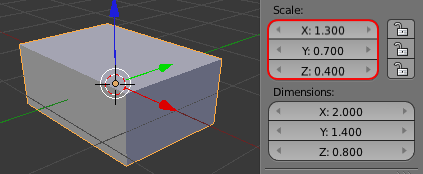
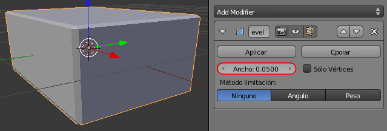
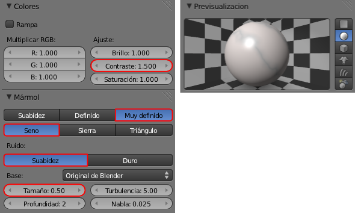
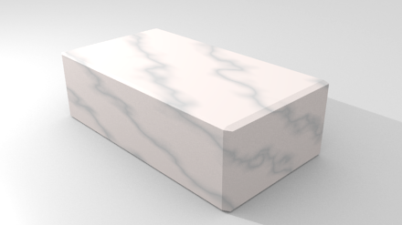
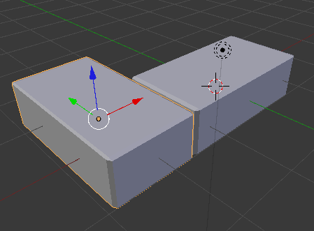
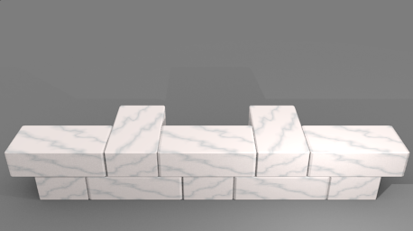
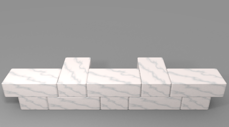
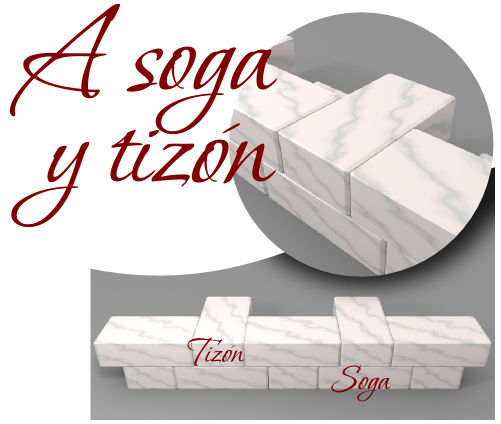

Material didáctico: A soga y tizón
Hay muchas formas de colocar los ladrillos al levantar un muro arquitectónico. Uno de los más conocidos es el llamado a soga y tizón haciendo referencia al nombre que reciben el largo y el ancho de un bloque de piedra.
Al cubo inicial de Blender le aplicamos los siguientes escalados desde el cuadro Propiedades ("N"):
- X: 1.300
- Y: 0.700
- Z: 0.400

Un buen aliado en este modelado es el modificador Biselado con un valor para Ancho de 0.05.

A nuestro bloque le aplicamos un Material  al que le asignamos un color Difuso hexadecimal DBDBDB; después le añadimos una Textura
al que le asignamos un color Difuso hexadecimal DBDBDB; después le añadimos una Textura  de Tipo: Mármol.
de Tipo: Mármol.
De la textura lo primero que editamos es el color secundario con un hexadecimal FFF5F2 y después nos vamos directos a las botoneras Colores y Mármol para ajustar los siguientes parámetros:
- Contraste: 1.5
- Muy definido y Seno
- Tamaño: 0.50
Con todo lo anterior obtenemos un render así (iluminación básica).
Estamos listos para crear la composición de ladrillos a soga y tizón.
Duplicamos ("Shift_D") el objeto, lo giramos 90º en Z ("RX90") y lo colocamos al lado del original. Estamos imitando una construcción manual por lo que la exactitud matemática no nos interesa en exceso.
Existe el modificador Serie (Selección en la traducción de Blender 2.62) que hace los duplicados de manera automática pero nosotros vamos a continuar duplicando ("Shift_D") y desplazando los dos objetos a la vez para conseguir una composición atractiva.
Tal vez nos apetezca roper la continuidad de las vetas del mármol entre bloques. Hay una pequeña posibilidad sin desvincular materiales y después alterar parámetros de la textura Mármol.
El truco está en seleccionar los diez bloques y usar Objeto/Aplicar/Rotación. De esa manera los orígenes de coordenadas se reorganizan y los que están a soga son distintos de los que están a tizón.
Con este modelado de base construimos materiales como el que aquí presentamos.
